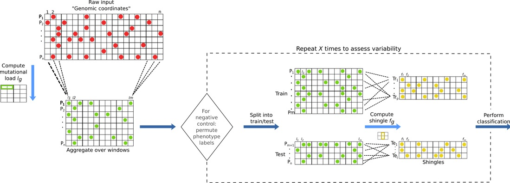

ReVeaL
ReVeaL, Rare Variant Learning, is a stochastic regularization-based learning algorithm.
Method
ReVeaL partitions the genome into non-overlapping, possibly non-contiguous, windows (w) and then aggregates samples into possibly overlapping subsets, using subsampling with replacement (stochastic), giving units called shingles that are utilized by a statistical learning algorithm. Each shingle captures a distribution of the mutational load (the number of mutations in the window w of a given sample), and the first four moments are used as an approximation of the distribution.
The entire ReVeaL pipeline can be executed by:
|
This function compute the mutational load and shingles, storing them in a folder as csv file |
Alternative, one can using the following API:
Pre-processing
Collection of common pre-processing functionalities.
|
Function to compute the mutational load files |
|
Split data into training and test set. |
|
Permute the sample labels. |
Shingle Computation
|
This function compute the shingles, generating the train and test sample |
An example of usage can be found in this tutorial
Citation
Please cite the following article if you use ReVeaL:
Parida L, Haferlach C, Rhrissorrakrai K, Utro F, Levovitz C, Kern W, et al. (2019) Dark-matter matters: Discriminating subtle blood cancers using the darkest DNA. PLoS Comput Biol 15(8): e1007332. https://doi.org/10.1371/journal.pcbi.1007332